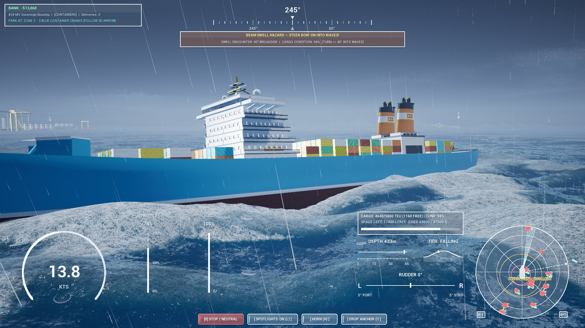
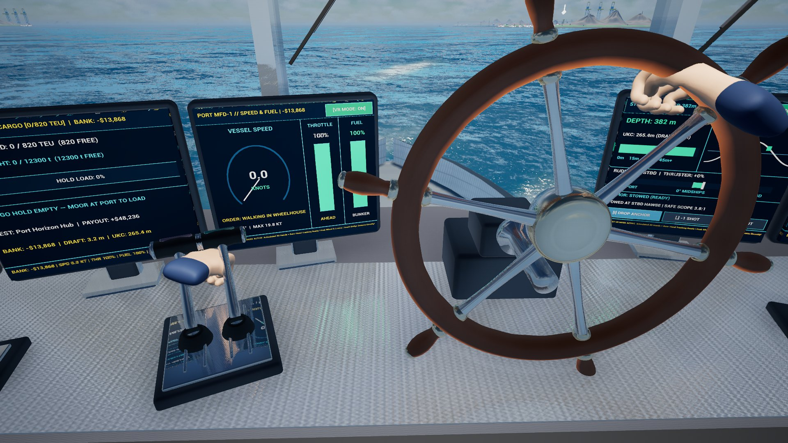

World Scale
4,617 km Ocean & 74 Landmasses
Sail from tiny coral skerries (0.28x) and 42 scenic islands up to 18 massive continental countries (8.5x) and 32 full 6-zone deepwater ports.
Command 35 vessels across a 4,617 km ocean world spanning 74 islands and continental countries. Crew the same mega-ship with friends in Multiplayer Company Co-Op, play 3D pool and watch YouTube in the aft lounge, ride out live storms, or steer with OpenXR VR hands.
No login or installer needed · Instant browser download · Unzip & run PLAY_TRUEHELM.bat
Everything included free in the standalone Unreal Engine 5.8 Windows & OpenXR VR build.
Sail from tiny coral skerries (0.28x) and 42 scenic islands up to 18 massive continental countries (8.5x) and 32 full 6-zone deepwater ports.
Press P to create and name your own real-player company. Crew the same hull together, provide fleet ships or bring your own, and set custom delivery payout % cuts or 1/N even splits.
Walk aft (F9) on Tier 5 flagships (#29–#35) to shoot Solids & Stripes 8-ball pool (PC pullback cue or physical VR cue) and paste YouTube links onto the 110" TV.
Progress across 5 tiers: 38-knot launches, offshore supply vessels, Ro-Ro car carriers, submersible Flo-Flo heavy transports, spherical Moss LNG ships, and 22,000-TEU ULCVs.
Track 12 live squalls, dense fog banks (~110m visibility), and gale fronts on Doppler radar for +20% to +35% storm hazard payouts, and drop physical stud-link bow anchors.
Switch seamlessly between 3rd-person orbit, 1st-person bridge walk, and OpenXR VR (95+ FPS) with dual 26-bone articulated hands and 8 interactive 3072×3072 bridge screens.
Tap or click any capture to view full 1080p resolution.





Select any tier to view vessel dimensions, cargo capacity, top speed, and shipyard price.

Capesize Ore Carrier
Suezmax Crude Tanker
VLCC Supertanker
ULCV 24,000 TEU
VLOC 400,000 DWT
Offshore FLNG Facility
Submersible Boat Carrier
Automatically synced every 5 minutes with what is currently being added, changed, and removed—plus full history & patch logs.
+ Added Smooth spherical Solid & Striped 3D pool balls with rolling spin; PC Left-Click pull-back cue & OpenXR VR physical cue grab/stroke; live YouTube link playback on the 110" TV; real-player Company custom naming, % delivery cuts & Company-Provided vs. Player-Provided ships.
~ Changed Background-threaded VHF radio voice capture (< 0.05 ms Game Thread) & fixed Bridge Monitor 7 / [P] Create Company buttons.
− Removed Cubish 20-tri pool balls & synchronous Game Thread audio stalls.
+ Added 5x Ocean Expansion (4,617 km) & 74 Islands/Countries (0.28x islets to 8.5x continents, 32 ports & 42 scenic islands), Tier 5 Mega-Ship Aft Lounge (9-ft Pool Table & 110" TV), and Multiplayer Company shared-ship co-op.
~ Changed Multi-scale 74-island ECDIS chart & unified low-poly crew character.
− Removed Duplicate ghost hulls when crewing the same company ship.
+ Added 12 moving localized weather cells (Squalls, Dense Fog Banks, Gale Fronts), 3K Doppler Weather Radar & +20%–35% storm hazard cargo bonuses.
+ Added 3K UltraSharp (3072×3072) Bridge Monitors (+24% larger screens, zero night bloom) & Always-Multiplayer Dual-Lock UTC world sync.
+ Added OpenXR VR 26-bone articulated hand tracking, physical wheel/throttle/anchor grabbing, upper-body console lean across all 8 monitors, and 35-ship stud-link bow anchors.
Download, unzip, and sail with friends on Windows PC or OpenXR VR in under a minute.
Click Download Free for Windows (.ZIP) to start the direct download immediately in your browser.
Right-click TrueHelm_Windows_Playable.zip → Extract All... → Extract (always extract the folder first before launching).
Open TrueHelm_Windows and run PLAY_TRUEHELM.bat (Desktop) or LAUNCH_TRUEHELM_IN_VR.bat (OpenXR VR).
Windows SmartScreen tip: if prompted on first launch, click More info → Run anyway.
1/N Split), and click Create Company.Free 1-click direct Windows download from GitHub Releases. Share this page with your friends and crew up on the ocean.
PLAY_TRUEHELM.bat!